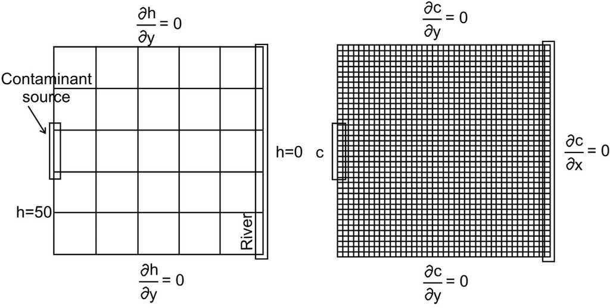

Trabajo realizado con el apoyo del Programa UNAM-DGAPA-PAPIME PE101922
import sysimport numpy as npimport matplotlib.pyplot as pltimport macti.visual as mvisfrom macti.evaluation import*print('Python', sys.version)print(np.__name__, np.__version__)print(plt.matplotlib.__name__, plt.matplotlib.__version__)
Python 3.11.6 | packaged by conda-forge | (main, Oct 3 2023, 10:40:35) [GCC 12.3.0]
numpy 1.26.2
matplotlib 3.8.1
quizz = Quizz('1', 'notebooks', 'local')
## Modelo conceptual.
Consideremos un acuífero de \(Lx = 804.7\) [m] y \(Ly = 804.7\) [m] y una fuenta de contaminante localizada en la pared izquierda y acotado por un río en la pared derecha, véase figura. Se considera que el contaminante que se modela es conservativo, es decir, que su concentración no varía al interactuar con el medio y que, por tanto, al atravesar el acuífero mantiene sus propiedades durante todo su recorrido. Se cuenta con un modelo de flujo y transporte de una sola capa, en dos dimensiones. El flujo del agua en el acuífero está en estado de equilibrio. Las condiciones de frontera son las que se muestran en la figura, para la carga hidraúlica \(h\) y para la concentración \(c\).

El valor de la carga hidráulica en la pared izquierda es de \(h = 50\) [m] y en la pared derecha es de \(h=0\) [m], en las otras paredes se considera no flujo. La fuente de contaminante que está activa durante el periodo de simulación tiene un valor constante de \(c = 50\) ppm. En los otros lugares de la frontera se considera no flujo del contaminante. Inicialmente \(h = 25\) [m] y \(c = 0\) ppm en el interior del dominio.
La porosidad tiene un valor de \(\phi = 0.25\), la dispersividad en dirección \(x\) tiene un valor de \(Dx = 33\) [m] y en dirección \(y\) tiene el valor de \(Dy = 3.3\) [m]. \(K = 21.22\) [m/s] y \(S_s = 1.0\)
Fuente: Leyva-Suárez, Esther, Herrera, Graciela S., & de la Cruz, Luis M.. (2015). A parallel computing strategy for Monte Carlo simulation using groundwater models. Geofísica internacional, 54(3), 245-254. https://doi.org/10.1016/j.gi.2015.04.020
# Parámetros físicosK =1.0# 21.22 # ConductividadDx =1.0# 33.0Dy =1.0# 3.3𝜙 =1.0# 0.25Lx =1.0# 804.7 # Longitud del dominio en dirección xLy =1.0# 804.7 # Longitud del dominio en dirección yprint('Parámetros físicos'+'\n'+40*'-')print('Conductividad K = {}'.format(K))print('Conductividad (Dx, Dy) = ({}, {})'.format(Dx, Dy))print('Porosidad 𝜙 = {}'.format(𝜙))print('Longitud en x = {} | Longitud en y = {}'.format(Lx,Ly))
Parámetros físicos
----------------------------------------
Conductividad K = 1.0
Conductividad (Dx, Dy) = (1.0, 1.0)
Porosidad 𝜙 = 1.0
Longitud en x = 1.0 | Longitud en y = 1.0
## Modelo matemático. Para este modelo usaremos las ecuaciones de flujo y transporte acopladas por la ley de Darcy para describir la evolución de la pluma del contaminante. Estas ecuaciones se van a resolver para las cargas hidráulicas y las concentraciones del contaminante y se escriben como sigue:
donde \(S_s\) es el almacenamiento específico, \(K\) es la conductividad hidráulica, \(h\) la carga hidráulica, \(c\) la concentración del soluto, \(D = (Dx, Dy)\) es la dispersión hidrodinámica, \(V = (Vx, Vy)\) la velocidad de poro y la \(\phi\) porosidad efectiva.
La ecuación de flujo \((1)\) describe el flujo del agua a través del acuífero, la ecuación de transporte \((3)\) describe los cambios en la concentración del contaminante a través del tiempo para un soluto conservativo. La ley de Darcy \((2)\) acopla las ecuaciones \((1)\) y \((3)\) y con ella se calcula la velocidad de poro del agua subterránea utilizando las cargas y la conductividad hidráulica.
Las condiciones de frontera, de acuerdo con la figura de la sección anterior, son las siguientes:
donde \(\delta\) representa el tamaño de las celdas en ambas direcciones y \(\delta_t\) el paso de tiempo.
# Parámetros numéricosNx =28# Número de incógnitas en dirección xNy =28# Número de incógnitas en dirección y𝛿 = Lx / (Nx+1) # Espaciamiento entre los puntos de la rejilla𝛿t =0.001# Paso de tiempoN = (Nx +2)* (Ny +2) # Número total de puntos en la rejillaprint('\nParámetros numéricos'+'\n'+40*'-')print('Nodos en x = {} | Nodos en y = {}'.format(Nx+2,Ny+2))print('𝛿 = {} | 𝛿t = {}'.format(𝛿, 𝛿t))
Parámetros numéricos
----------------------------------------
Nodos en x = 30 | Nodos en y = 30
𝛿 = 0.034482758620689655 | 𝛿t = 0.001
## Modelo computacional.
### Algoritmo. Los pasos a seguir son los siguientes.
1. Definir los parámetros físicos y numéricos del problema: (ya se definiron antes)
print('Parámetros físicos'+'\n'+40*'-')print('Conductividad K = {}'.format(K))print('Conductividad (Dx, Dy) = ({}, {})'.format(Dx, Dy))print('Porosidad 𝜙 = {}'.format(𝜙))print('Longitud en x = {} | Longitud en y = {}'.format(Lx,Ly))print('\nParámetros numéricos'+'\n'+40*'-')print('Nodos en x = {} | Nodos en y = {}'.format(Nx+2,Ny+2))print('𝛿 = {} | 𝛿t = {}'.format(𝛿, 𝛿t))
Parámetros físicos
----------------------------------------
Conductividad K = 1.0
Conductividad (Dx, Dy) = (1.0, 1.0)
Porosidad 𝜙 = 1.0
Longitud en x = 1.0 | Longitud en y = 1.0
Parámetros numéricos
----------------------------------------
Nodos en x = 30 | Nodos en y = 30
𝛿 = 0.034482758620689655 | 𝛿t = 0.001
2. Definir la rejilla donde se hará el cálculo (malla):
### Ejercicio 1. Calcule los arreglos x y y correctos para generar la malla.
### BEGIN SOLUTIONx = np.linspace(0,Lx,Nx+2) # Arreglo con las coordenadas en xy = np.linspace(0,Ly,Ny+2) # Arreglo con las coordenadas en yfile_answer = FileAnswer()file_answer.write('1', x, 'Revisa la definición de las coordenadas en dirección x')file_answer.write('2', y, 'Revisa la definición de las coordenadas en dirección y')### END SOLUTIONxg, yg = np.meshgrid(x,y,indexing='ij', sparse=False) # Creamos la rejilla para usarla en Matplotlib
Creando el directorio :/home/jovyan/macti_notes/notebooks/.ans/RAUGM2023/
Respuestas y retroalimentación almacenadas.
----------------------------------------
1 | Tu resultado es correcto.
----------------------------------------
----------------------------------------
2 | Tu resultado es correcto.
----------------------------------------
3. Definir las condiciones iniciales y de frontera:
Para el caso de la concentración, necesitamos definir la fuente de contaminante en la pared izquierda:
### Ejercicio 2. Calcule el lugar donde se debe aplicar la condición de frontera distinta de cero para la concentración \(c\). Recuerde que el intervalo es \(y \in [\frac{3}{8} Ly, \frac{5}{8}Ly]\).
h = np.zeros((Nx+2, Ny+2))h[0,:] =50# Pared izquierda h[Nx+1,:] =0# Pared derechac = np.zeros((Nx+2, Ny+2))c[0,:] =0# Pared izquierda c[Nx+1,:] =0# Pared derechac[:,0] =0# Pared inferiorc[:,Ny+1] =0# Pared superior### BEGIN SOLUTIONN1 =int((Ly *3.0/8.0) / 𝛿)N2 =int((Ly *5.0/8.0) / 𝛿)file_answer.write('3', N1, 'Revisa el cálculo de límite inferior del intervalo')file_answer.write('4', N2, 'Revisa el cálculo de límite superior del intervalo')### END SOLUTIONc[0, N1:N2] =50# Pared izquierdaprint('N1 = {}'.format(N1))print('N2 = {}'.format(N2))
----------------------------------------
3 | Tu resultado es correcto.
----------------------------------------
----------------------------------------
4 | Tu resultado es correcto.
----------------------------------------
----------------------------------------
5 | Tu resultado es correcto.
----------------------------------------
----------------------------------------
6 | Tu resultado es correcto.
----------------------------------------